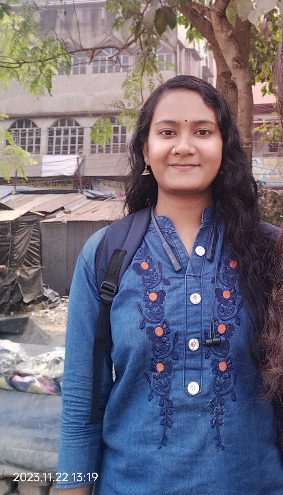

Detail-oriented Full-Stack Engineer specializing in backend ecosystem development. Focused on building robust MVC applications, highly optimized relational databases, secure RESTful APIs, and smart automation modules that improve business efficiency.

Holding a Master of Computer Applications (MCA) degree, I bridge the gap between complex algorithmic problem-solving and stable backend business pipelines. My current daily architecture centers on PHP (CodeIgniter), SQL database query optimization, server cron-job configurations, and secure token-based authentication schemas.
I thrive on turning data-heavy requirements into fluid web ecosystems. Whether it's crafting user-driven design tools like UDFYN or handling predictive frameworks using deep learning, I focus on clean code syntax, structural modularity, and speed.
Result: 7.8 CGPA
Result: 8.04 CGPA
Result: 76% Marks
Result: 81% Marks
Architecting modular MVC components and relational database models using CodeIgniter and MySQL. Optimized legacy queries and structural indexing to reduce web page loading latencies by roughly 20%. Developing secure third-party REST API wrappers and custom scheduled server Cron Jobs.
Created dynamic responsive viewports handling complex user-driven product styling customizations and canvas workflows. Programmed custom admin CRUD operations dashboards to evaluate logistics, integrated multi-courier shipping endpoints, and deployed server Cron Jobs for automated cart abandonment reminders.
Architected an end-to-end relational User Management Application implementing full CRUD operations across multi-tiered access structures. Normalized a MySQL schema with strict constraints and automated data logging. Built security layers to block SQL injection using PHP cryptography APIs.
Engineered a deep learning clinical framework applying Convolutional Neural Networks (CNN) to categorize medical ultrasound scans. Handled extensive image data preprocessing routines (geometric augmentation, normalization) and validated accuracy metrics. Built an isolated SPA dashboard with React.js for visual upload canvas overlays.
Built a secure, scalable RESTful API architecture integrated with a cloud-hosted MongoDB Atlas cluster using optimized Mongoose relational schemas. Engineered a user authentication pipeline passing JSON Web Tokens (JWT) through secure Bearer token headers, rigorously verified via Postman.
Developed a responsive web application leveraging Flask micro-framework routing. Designed a modern glassmorphic UI layout featuring personalized user dashboard profiles and alert systems. Implemented real-time checkout availability tracking and custom session conditional logic blocks.